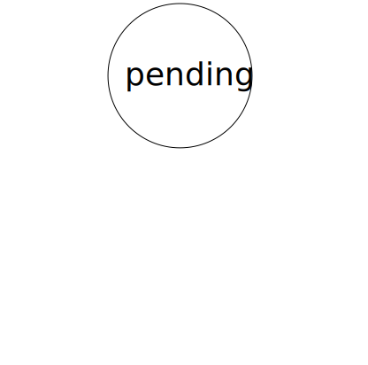
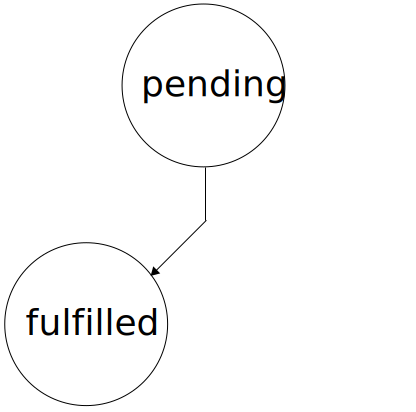
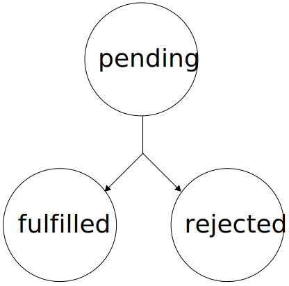

name: cover background-image: url(../assets/img/background.png) # Promises .slide-cover[ JavaScript<br> Wintersemester 2014/2015<br> HS Augsburg Johannes Ewald<br> Paul Torka<br> ] --- layout: true class: center, middle .slide-header-left[ Promises ] .slide-header-right[ JavaScript WS 14/15 HSA ] --- ## Beispiel aus node.js: readFiles .left[ Wir möchten eine Funktion `readFiles(files, callback)` schreiben, die die übergebenen Dateien asynchron einliest und die Inhalte anschließend im Callback als Array zurückgibt. ] --- ```javascript var files = [ "a.txt", "b.txt", "c.txt" ]; readFiles(files, function (err, contents) { if (err) { throw err; } ... }); ``` --- Node.js bietet eine asynchrone Funktion `fs.readFile()` an, mit der man **eine** Datei einlesen kann ```javascript fs.readFile("a.txt", function (err, content) { }); ``` --- ### Kurze Wiederholung:<br>Asynchrone Funktionen Asynchrone Funktionen erwarten als letztes Argument einen Callback, der ausgeführt wird, sobald die asynchrone Funktion ein Ergebnis zurückgeben möchte. --- .alert[ ### Achtung ] Der Zeitpunkt, wann ein Callback ausgeführt wird, ist unbekannt! --- ```javascript function readFiles(files, callback) { var contents = []; } ``` --- ```javascript function readFiles(files, callback) { var contents = []; files.forEach(function (file) { }); } ``` --- ```javascript function readFiles(files, callback) { var contents = []; files.forEach(function (file) { fs.readFile(file, function (err, data) { if (err) { callback(err); return; } contents.push(data); }); }); } ``` --- ### Problem: Wann sind alle `fs.readFile()` fertig? --- ### Callbacks zählen? ```javascript var pending = files.length; files.forEach(function (file) { fs.readFile(file, function (err, data) { ... done(); }); }); function done() { pending--; if (pending === 0) { callback(null, contents); } } ``` --- ### Callback-Hell! ```javascript p_client.open(function(err, p_client) { p_client.dropDatabase(function(err, done) { p_client.createCollection('test_custom_key', function(err, collection) { ... }); }); }); ``` --- <img src="../assets/img/braces.jpg"> --- ## Lösung: Promises --- > If a function cannot return a value or throw an exception without blocking, it can return a promise instead. A promise is an object that represents the return value or the thrown exception that the function may eventually provide. <cite>http://documentup.com/kriskowal/q/#</cite> --- ### Beispiel ```javascript doSomethingAsync(function (err, result) { doSomethingAsync(function (err, result) { doSomethingAsync(function (err, result) { }); }); }); ``` --- ```javascript doSomethingAsync() .then(doSomethingAsync) .then(doSomethingAsync) .then(doSomethingAsync) ``` --- ### Einfache Promise-Implementierung --- Ein `Promise` repräsentiert einen zukünftigen Wert. ---  Initial ist ein `Promise` immer im Zustand `pending` ---  Ein `Promise` wird `fulfilled`, wenn die asynchrone Funktion einen Wert zurückgeben möchte ---  Ein `Promise` wird `rejected`, wenn die asynchrone Funktion einen Fehler zurückgeben möchte --- Ist ein `Promise` `fulfilled` oder `rejected`, wechselt es nicht mehr den Zustand. --- Ein `Promise` hat eine `then()`-Methode, die zwei Listener akzeptiert - onFulfilled - onRejected --- ```javascript var promise = someAsyncFunction(); promise.then(ok, fail); function ok(result) { ... } function fail(error) { ... } ``` --- ### Chaining Promises können "gechained" werden ```javascript someAsyncFunction() .then(function (someResult) { // do something return anotherAsyncFunction(); }) .then(function (anotherResult) { // and so on }); ``` --- ### Spezifikation [Promises/A+](http://promises-aplus.github.io/promises-spec/) --- ### Und ab ECMAScript 6 Natives [`Promise`](https://developer.mozilla.org/en-US/docs/Web/JavaScript/Reference/Global_Objects/Promise) --- .alert[ ### Achtung ] Promises werden manchmal auch **Deferred**, **Futures** oder **Thenables** genannt. Es gibt veraltete Implementierungen mit kleinen Unterschieden. --- **Deshalb:** Verwendet am besten Implementierungen, die konform zu [Promises/A+](http://promises-aplus.github.io/promises-spec/) sind --- ### Bekannte Promise-Implementierungen - [when.js](https://github.com/cujojs/when) - [q](http://documentup.com/kriskowal/q/) --- ### Sehr bekannt,<br>aber nicht [Promises/A+](http://promises-aplus.github.io/promises-spec/)-konform - [jQuery.Deferred](http://api.jquery.com/category/deferred-object/) --- ### Composition Promises können auch zusammengefasst werden: ```javascript Promise.all([ // <-- ES6 Promise doSomeAsyncStuff(), doSomeAsyncStuff(), doSomeAsyncStuff() ]).then(function (results) { // results = [result1, result2, result3] }); ``` --- Zurück zum Eingangsszenario... --- .shrink-code[ ```javascript function readFiles(files, callback) { var contents = []; var pending = files.length; files.forEach(function (file) { fs.readFile(file, function (err, content) { if (err) { callback(err); return; } contents.push(content); done(); }); }); function done() { pending--; if (pending === 0) { callback(null, contents); } } } ``` ] --- ### Mit Promises ```javascript function readFiles(files) { return Promise.all(files.map(fs.readFile)); } ```